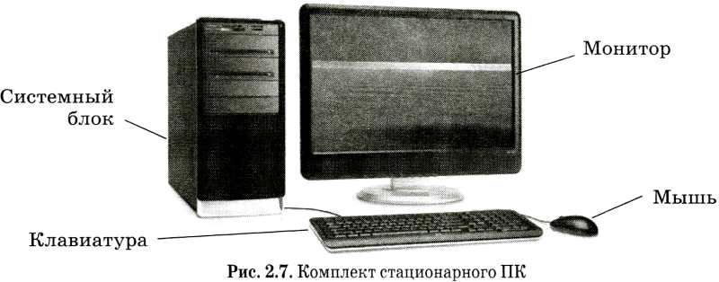
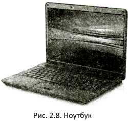
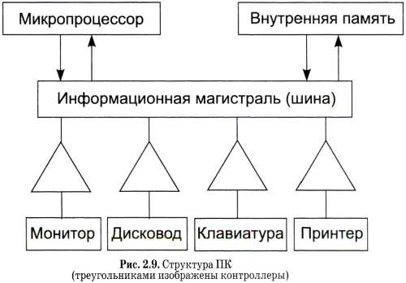

| Компьютер: устройство и программное обеспечение | |
|---|---|
| Меню: | Как устроен персональный компьютер |
Основные темы параграфа: Что такое ПК В § 5 мы познакомились с основными устройствами компьютера — электронно-вычислительной машины (ЭВМ). Современные ЭВМ бывают самыми разными: от больших, занимающих целый зал, до маленьких, помещающихся на столе, в портфеле и даже в кармане. Разные ЭВМ используются для разных целей. Сегодня самым массовым видом ЭВМ являются персональные компьютеры. Персональные компьютеры (ПК) предназначены для личного (персонального) использования. Существуют различные типы ПК: стационарные (настольные) и мобильные (ноутбуки, планшетные ПК, карманные ПК). Несмотря на разнообразие моделей ПК, в их устройстве существует много общего. Об этих общих свойствах и пойдет сейчас речь.Основные устройства ПК Основной «деталью» персонального компьютера является микропроцессор (МП). Это миниатюрная электронная схема, созданная путем очень сложной технологии, выполняющая функцию процессора компьютера. Персональный компьютер представляет собой набор взаимосвязанных устройств. В стационарном ПК центральным устройством является системный блок. В системном блоке находится «мозг» машины: микропроцессор и внутренняя память. Там же помещаются: блок электропитания, дисководы, контроллеры внешних устройств. Системный блок снабжен вентиляторами для охлаждения нагревающихся при работе элементов. С наружной стороны системного блока имеются сетевой выключатель, кнопка перезагрузки компьютера, разъемы (которые называют портами) для подключения внешних устройств, выдвижной лоток для установки оптического диска. К системному блоку подключены клавиатура (клавишное устройство), монитор (другое название — дисплей) и мышь (манипулятор). Иногда используются другие типы манипуляторов: джойстик, трекбол и пр. Дополнительно к ПК могут быть подключены: принтер (устройство печати), модем (для выхода в компьютерную сеть) и другие устройства (рис. 2.7). На рисунке 2.7 показана стационарная модель ПК, на рис. 2.8 — ноутбук. В ноутбуке все необходимые компоненты объединены в одном корпусе, который складывается как книжка (отсюда название компьютера) Все устройства внешней памяти, а также устройства ввода/вывода взаимодействуют с процессором ПК через специальные блоки, которые называются контроллерами (от английского controller — контролер, управляющий). Существуют контроллер дисковода, контроллер монитора, контроллер принтера и т. п. Сравнительно недавно в составе ПК появился универсальный контроллер, позволяющий подключать через универсальный разъем (USB) различные виды устройств: принтер, монитор, клавиатуру, мышь и др.Магистральный принцип взаимодействия устройств ПК Принцип, по которому организована информационная связь между устройствами компьютера, называется магистральным принципом взаимодействия. Процессор через многопроводную линию, которая называется магистралью (другое название — шина), связывается с другими устройствами (рис. 2.9).  Каждое подключаемое к ПК устройство получает свой номер, который выполняет роль адреса этого устройства. Информация, передаваемая от процессора к устройству, сопровождается его адресом и подается на контроллер. Далее работой устройства управляет контроллер. Характерная организация магистрали такая: по одной группе проводов (шина данных) передается обрабатываемая информация, по другой (шина адреса) — адреса памяти или внешних устройств, к которым обращается процессор. Есть еще третья часть магистрали — шина управления; по ней передаются управляющие сигналы (например, проверка готовности устройства к работе, сигнал к началу работы устройства и др.).Коротко о главном В состав системного блока входят: микропроцессор, внутренняя память, дисководы, блок питания, контроллеры внешних устройств. Внешние устройства (устройства ввода/вывода, устройства внешней памяти) взаимодействуют с процессором ПК через контроллеры. Все устройства ПК связаны между собой по многопроводной линии, которая называется информационной магистралью, или шиной. Каждое внешнее устройство имеет свой адрес (номер). Передаваемая к нему по шине данных информация сопровождается адресом устройства, который передается по адресной шине. Вопросы и задания Выполните задания теста:(вводите в окно ввода цифру правильного ответа)1.Главная состовляющая компьютера 1)Системный блок 2)Процессор 3)жесткий диск 2. Двоичная кодировка хранится в: 1)ноликах и симках 2)ноликах и единицах 3)плюсах и минусах 3. Наименьший элемент памяти 1)фатон 2)хай-хэт 3)бит | |
Все права защищены Яковлевым Т. и Каримовым С. ООО "The worst company in the world" |
|